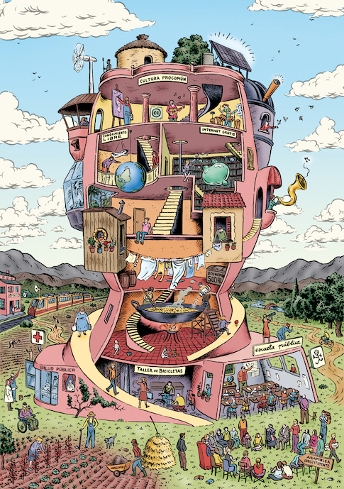

Hola
github.com/danigb
github.com/danigb
danigb@gmail.com
github.com/danigb
danigb@gmail.com
twitter.com/xdanigbx/
github.com/danigb
danigb@gmail.com
twitter.com/xdanigbx/
Look, ma... no LinkedIn!
¿Por qué estoy aquí?
¿Por qué estoy aquí?
Lo primero que pensé...

¡No está mal!
Lo segundo que pensé...

¿Quién está programando Elm en Sevilla?
Y lo tercero...

¡Impostor!
En primer lugar ...
Al fin y al cabo...

¡Un momento!
¡Un momento!

¡Un momento!
¡Me pagaron por escribir software libre!
¡Un momento!


¡Un momento!
Software libre
Software libre
¿Por qué?
¿Por qué?

¿Por qué?

¿Por qué?
¿Por qué?
¿Por qué?
¿Por qué?
¿Por qué?

¿Por qué?
¿Por qué?
Software libre
¿Cómo?
¿Cómo?
No lo se.¿Cómo?
Haciendo por las noches lo que te gusta (y con suerte por el día)Software libre
Algo habrás aprendido...
Algo habrás aprendido...
1. Construir es mucho más fácil que mantener
Algo habrás aprendido...
2. Lo más fácil es programar
Algo habrás aprendido...
3. Lo más difícil es comunicar
No solo tener un blog. Documentación, issues, code reviewsAlgo habrás aprendido...
4. Lo más difícil es mantener el interés
Java -> Ruby | Angular -> React | JS -> Elm?Algo habrás aprendido...
5. Es un currazo
 Mis condolencias,
https://runcommand.io/2016/06/26/my-condolences-youre-now-the-maintainer-of-a-popular-open-source-project/
Mis condolencias,
https://runcommand.io/2016/06/26/my-condolences-youre-now-the-maintainer-of-a-popular-open-source-project/
Algo habrás aprendido...
- Construir es mucho más fácil que mantener
- Lo más fácil es programar
- Lo más difícil es comunicar
- Lo más difícil es mantener el interés
- Es un currazo
Algo habrás aprendido...
... es decir:
elige bien lo que deseas
(programar)
El software libre es la hostia
El software libre es la hostia
Infraestructura vs. Ecosistemas
(https://medium.com/@jayfresh/open-source-projects-are-a-lot-more-exciting-than-roads-and-bridges)